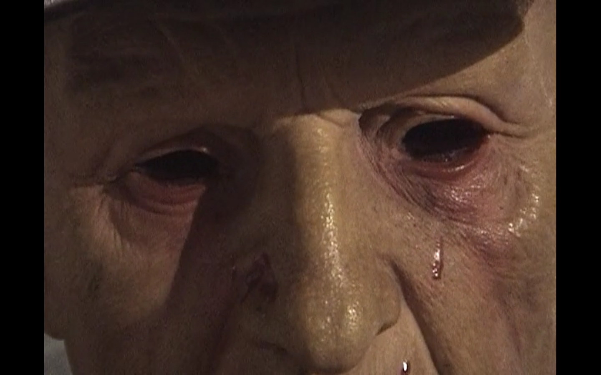
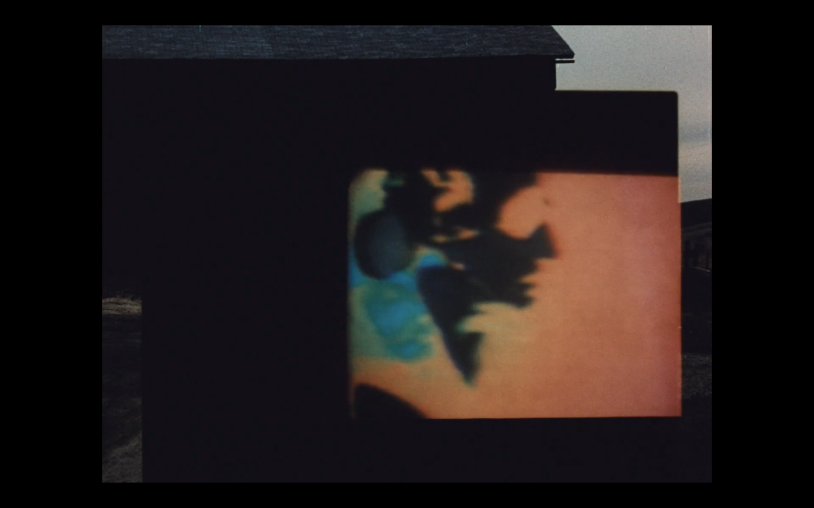
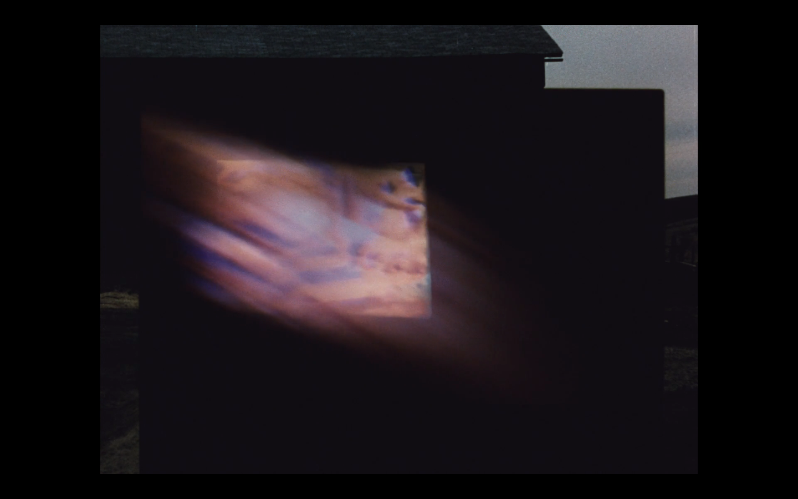
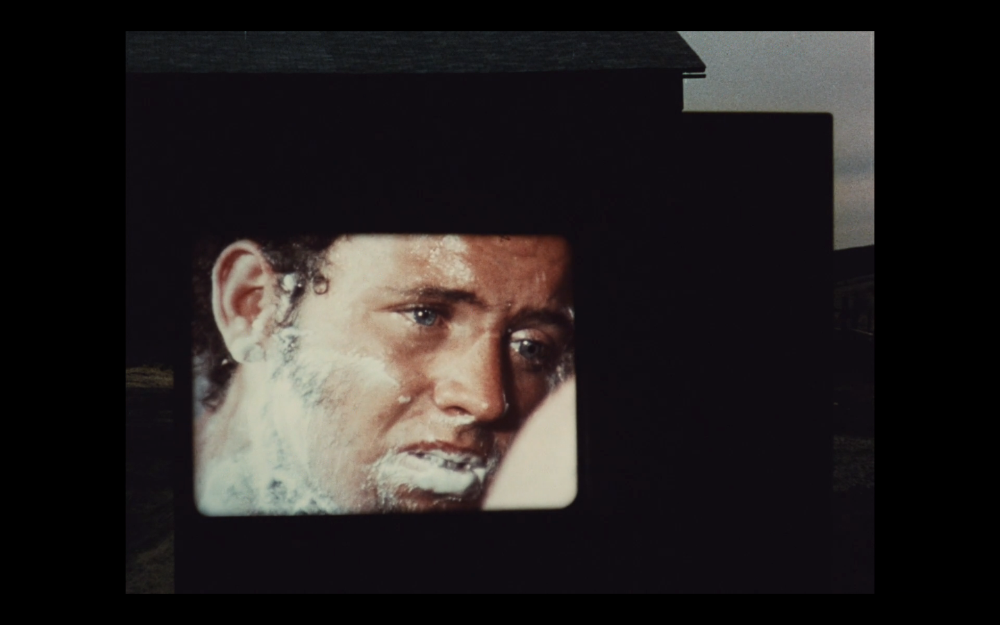
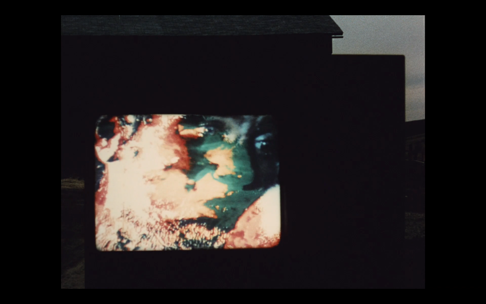
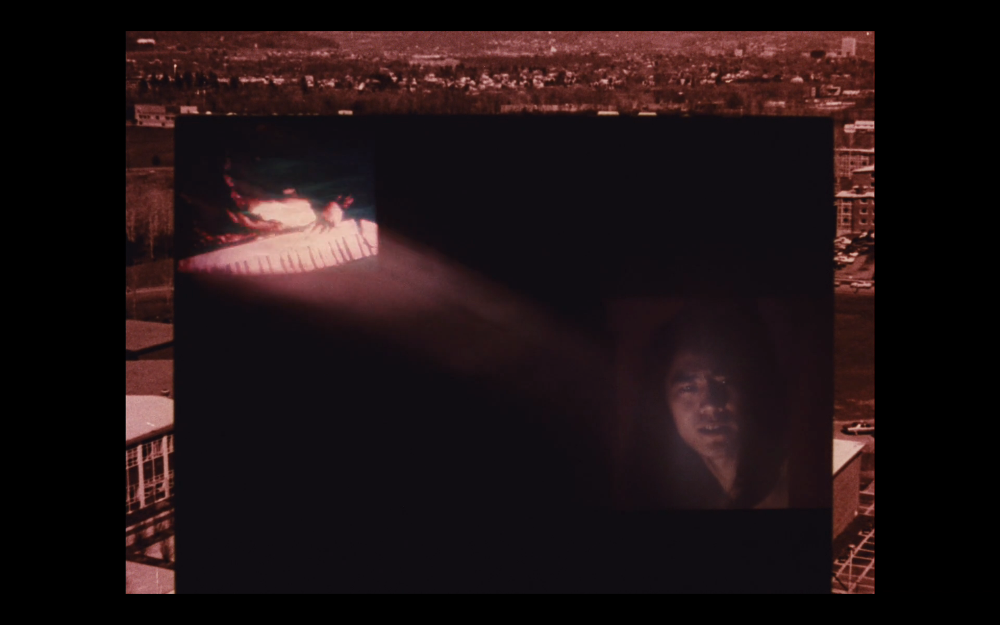
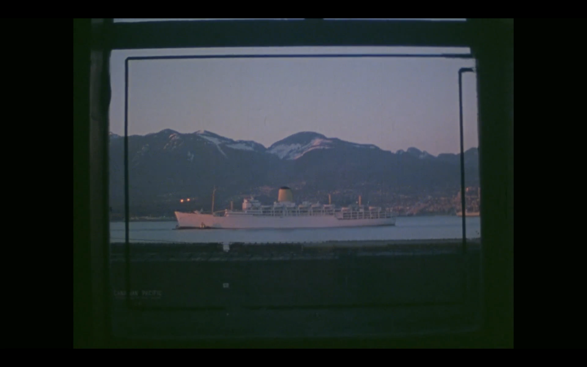
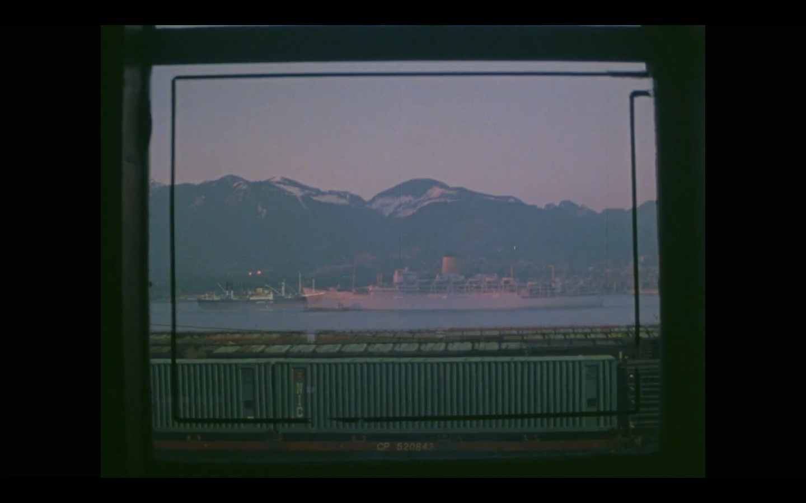
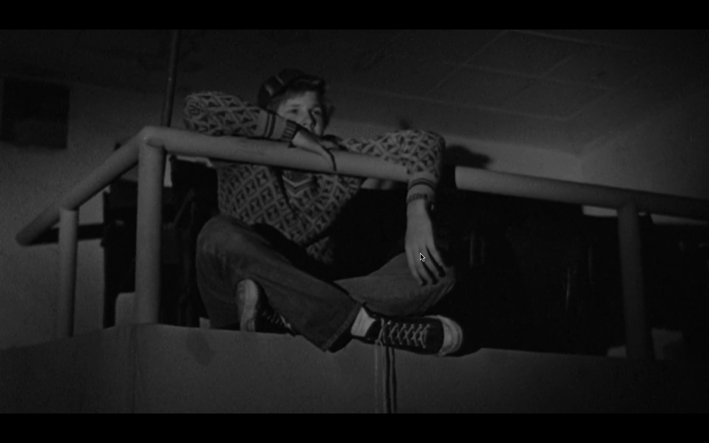

How to Live with Regret (2018)

Go to 42nd Street, where you can always find a Western.
The Times Square Theatre, which shows Westerns exclusively,
is always full, day or night. A sad, lonely crowd, made up
usually of older people. It’s like an old people’s home, a
hundred per cent male. The American Western keeps them company.
They sit there, in the midst of all that poetry sweeping grandly
across the screen, dreaming away.
— Jonas Mekas, "On Westerns and 42nd Street", Village Voice February 17, 1960





We Can't Go Home Again (1973)


Canadian Pacific I (1974)

The Last Picture Show (1971)